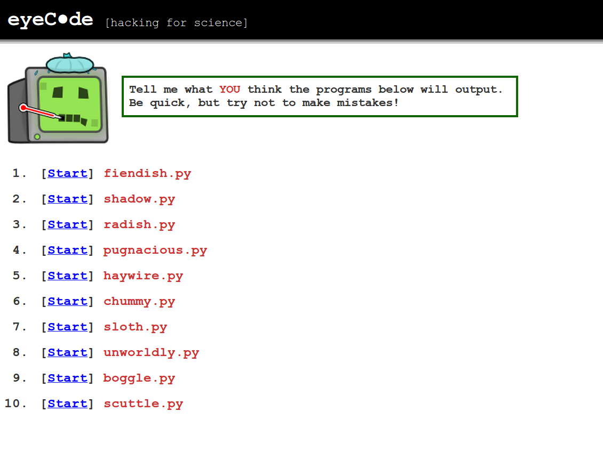

<!DOCTYPE html>

<meta charset="utf-8">
<title>What Makes Code Hard to Understand?</title>

<!-- Intro -->

<section>
    <h1>What Makes Code Hard to Understand?</h1>
    <footer>by Mike Hansen, Rob Goldstone, Andrew Lumsdaine</footer>
</section>

<section>
    <h3 style="color: #A33;">A <span style="color: #336;">(Quantitative)</span> Cognitive Model of</h3>
    <h1 style="margin-top: 0;">
        What Makes Code Hard<br>
        <span style="color:#A33; font-size: 55px; margin-top: -10px;">reading &amp; understanding</span><br>
    </h1>
    <div style="position: absolute; left: 415px; top: 160px; color: #A33; font-size: 65px;">^</div>
    <footer>by Mike Hansen, Rob Goldstone, Andrew Lumsdaine</footer>
</section>

<!-- Motivation and results preview -->
<!--<section>-->
    <!--<h3>Motivation</h3>-->
    <!--<hr />-->
    <!--<ul class="hifirst incremental">-->
        <!--<li><span>Why quantitative?</span>-->
        <!--<ul>-->
            <!--<li>Automated codebase analysis-->
            <!--<li>Constrain program generation-->
            <!--<li>Evidence for language design-->
        <!--</ul>-->
    <!--</ul>-->
    <!--<ul class="hifirst incremental">-->
        <!--<li><span>Why a cognitive model?</span>-->
        <!--<ul>-->
            <!--<li>Include effects of experience, task-->
            <!--<li>Unified model for small/large programs-->
            <!--<li>Explain experimental results-->
        <!--<ul>-->
    <!--</ul>-->
<!--</section>-->

<!--<section>-->
    <!--<h3>Spoilers</h3>-->
    <!--<hr />-->
    <!--<ul class="hifirst">-->
        <!--<li><span>Assuming that...</span>-->
        <!--<ul>-->
            <!--<li>Understanding &asymp; predicting output-->
        <!--</ul>-->

        <!--<li><span>We found</span>-->
        <!--<ul>-->
            <!--<li>Existing metrics alone don't predict correctness/RT-->
            <!--<li>Experience plays a big role &nbsp;<span class="hand">(even for small programs)</span>-->
            <!--<li>Syntactically irrelevant features can be significant-->
            <!--<ul>-->
                <!--<li>horizontal/vertical whitespace-->
                <!--<li>ordering, operator uses-->
            <!--</ul>-->
        <!--</ul>-->
    <!--</ul>-->
<!--</section>-->

<!-- Background -->
<section>
    <h3>Quantifying Hard-to-Understand Code</h3>
    <ul class="hifirst incremental">
        <li><span>Complexity</span>
        <ul>
            <li><span style="color: #338;">Lines of Code (LOC)</span> <span class="hand">&larr; correlated w/ everything</span>
            <li>Cyclomatic Complexity (CC) <span class="hand">&larr; control flow</span>
            <li><span style="color: #338;">Halstead Volume/Effort (V/E)</span> <span class="hand">&larr; related to entropy</span>
            <li>Percent comments (PC)
        </ul>

        <li><span>Readability</span>
        <ul>
            <li># of identifiers &darr; &nbsp;<span class="hand">(variable, function names)</span>
            <li>Line length, indentation &darr;
            <li># of blank lines &uarr;
            <li>Software Readability Ease Score (SRES)
            <ul>
                <li>Like Flesch score (FRES)
                <li>Tokens = syllables, statements = words, units = sentences
            </ul>
        </ul>
    </ul>
    <div class="output">
        LOC &le; 20<br>
        CC &le; 15<br>
        V &le; 1000<br>
        PC 30-75%<br>
    </div>
    <footer>
        Problems: choosing thresholds, larger programs unreadable
    </footer>
</section>

<section>
    <h3>The Psychology of Programming</h3>
    <hr />
    <ul class="hifirst incremental">
        <li><span>Cognitive Dimensions of Notation (Blackwell, 2001)</span>
        <ul>
            <li>Consistency, hidden dependencies, etc.
        </ul>

        <li><span>Rules of Discourse (Soloway, 1984)</span>
        <ul>
            <li>Variable names should reflect function
            <li>Don't include code that won't be used
            <li>Don't do double duty with code in a non-obvious way
        </ul>

        <li><span>Plans &amp; Schemas (Pennington, 1987)</span>
        <ul>
            <li>Textbase vs. situation/domain models
            <li>Effect of task
            <ul>
                <li>Read to recall/use/modify
            </ul>
            <li>Effect of experience
            <ul>
                <li>Reading strategies, schema use &nbsp;<span class="hand">(i for counter)</span>
            </ul>
        </ul>
    </ul>
    <footer>
        Problems: precise prediction
    </footer>
</section>

<section>
    <h3>Understanding "Simple" Programs</h3>
    <hr />
    <ul class="hifirst">
        <li><span style="color: #333;">Understanding = predict output</span>
        <li><span style="color: #333;">Simple  = within metric thresholds</span>
    </ul>

    <ul class="hifirst incremental">
        <li><span>Effects of Notation</span>
        <ul>
            <li>Representation, spacing, ordering
            <ul>
                <li>Landy &amp; Goldstone, 2007 &nbsp;<span class="hand">(spacing &amp; order of operations)</span>
            </ul>
        </ul>

        <li><span>Expectation Violations</span>
        <ul>
            <li>Unused code, misleading schemas, priming
            <ul>
                <li>Detienne, 2001 &nbsp;<span class="hand">(distorted recall)</span>
            </ul>
        </ul>

        <li><span style="color: #336;">Interactions with Experience?</span>
    </ul>
</section>

<!-- Experiment -->
<section>
    <h2>The Experiment</h2>
    <h3 style="text-align: center; color: #A33;">eyeCode</h3>
    <div style="text-align: center;">
        
    </div>
</section>

<section>
    <h3>Format</h3>
    <hr />
    <div class="col half">
        <ol class="hifirst" style="margin-left: 50px;">
            <li><span>Pre-test survey</span>
            <ul>
                <li>Experience, age, education
            </ul>
            <li><span>10 Python programs</span>
            <ul>
                <li>Predict printed output
                <li>Random version
            </ul>
            <li><span>Post-test survey</span>
            <ul>
                <li>Confidence, feedback
            </ul>
        </ol>
    </div>
    <div class="col half">
        <ul>
            <li>45 minutes
            <li>No highlighting
            <li>No feedback
        </ul>
    </div>
</section>

<section>
    <figure>
        
    </figure>
</section>

<section>
    <figure>
        
    </figure>
</section>

<section>
    <h3>Participants</h3>
    <hr />
    <ul class="hifirst" style="margin-bottom: 20px;">
        <li><span>162 participants (129 M / 30 F / 3 UR)</span>
        <ul class="inner">
            <li>Bloomington - 29 ppl @ $10
            <li>Mechanical Turk - 130 ppl @ $0.75
            <li>Other - 3
        </ul>
    </ul>
    <div class="col half center">
        <h4>Tobii TX300</h4>
        
    </div>
    <div class="col half center">
        <h4>Mechanical Turk</h4>
        
    </div>
</section>

<section>
    <div style="text-align: center;">
        
    </div>
</section>

<section>
    <h3>Variables</h3>
    <hr />
    <ul class="hifirst">
        <li><span>Independent</span>
        <ul>
            <li>Program version (2-3)
            <li>Python experience (years)
            <li>Programming experience (years)
        </ul>
        <li><span>Dependent</span>
        <ul>
            <li>Grade (0-10)
            <ul><li>10 = perfect, &ge; 7 = correct, 4-6 = CE</ul>
            <li>Reaction time (14 - 256 sec)
            <li>Common error (prob.)
            <li>Correct (prob.)
        </ul>
    </ul>
</section>

<!-- Results -->
<section>
    <h2>Results</h2>
    <div style="text-align: center;">
        
    </div>
</section>

<!-- counting -->
<section>
    <h3>counting</h3>
    <div style="height: 18%;">
        <div class="col half">
            <h4>nospace</h4>
            <iframe src="programs/counting_nospace.html" seamless></iframe>
        </div>
        <div class="col half">
            <h4>twospaces</h4>
            <iframe src="programs/counting_twospaces.html" seamless></iframe>
        </div>
        <div class="output">
            The count is 1<br>
            <span class="error">Done counting</span><br>
            The count is 2<br>
            <span class="error">Done counting</span><br>
            The count is 3<br>
            <span class="error">Done counting</span><br>
            The count is 4<br>
            Done counting
        </div>
    </div>
    <div class="col half">
        
    </div>
    <div class="col half">
        
    </div>
    <footer>
        No effect of experience!
    </footer>
</section>

<!-- scope -->
<section>
    <h3>scope</h3>
    <div style="height: 38%;">
        <div class="col half">
            <h4>diffname</h4>
            <iframe src="programs/scope_diffname.html" seamless></iframe>
        </div>
        <div class="col half">
            <h4>samename</h4>
            <iframe src="programs/scope_samename.html" seamless></iframe>
        </div>
        <div class="output">
            4 | <span class="error">22</span><br>
        </div>
    </div>
    <br style="clear: both;">
    <div class="col half">
        
    </div>
    <div class="col half">
        <table class="small">
            <thead>
                <tr>
                    <td></td>
                    <td>all versions</td>
                </tr>
            </thead>
            <tbody>
                <tr>
                    <td>Avg. Grade (0-10)</td>
                    <td>6.95</td>
                </tr>
                <tr>
                    <td>Avg. RT (sec)</td>
                    <td>58.0</td>
                </tr>
                <tr>
                    <td>Effects</td>
                    <td>&darr; CE with Python exp. (OR=0.71, p &lt; .05)</td>
                </tr>
            </tbody>
        </table>
    </div>
</section>

<!-- whitespace -->
<section>
    <h3>whitespace</h3>
    <div style="height: 43%;">
        <div class="col half">
            <h4>zigzag</h4>
            <iframe src="programs/whitespace_zigzag.html" seamless></iframe>
        </div>
        <div class="col half">
            <h4>linedup</h4>
            <iframe src="programs/whitespace_linedup.html" seamless></iframe>
        </div>
    </div>
    <div class="output">
        0 1 &nbsp;| <span class="error">5</span><br>
        1 6 &nbsp;| <span class="error">10</span><br>
        2 11 | <span class="error">15</span><br>
    </div>
    <table>
        <thead>
            <tr>
                <td></td>
                <td>zigzag</td>
                <td>linedup</td>
            </tr>
        </thead>
        <tbody>
            <tr>
                <td>Correct (%)</td>
                <td>84.0</td>
                <td>88.6</td>
            </tr>
            <tr>
                <td>Effects</td>
                <td colspan="2">&darr; correct zigzag (OR=0.18, p &lt; .05)</td>
            </tr>
            <tr>
                <td>&nbsp;</td>
                <td colspan="2">&uarr; correct zigzag x Python exp (OR=2.60, p &lt; .05)</td>
            </tr>
        </tbody>
    </table>
</section>

<!-- between -->
<section>
    <h3>between</h3>
    <div class="col half">
        <h4>functions <tt>(24|7|830)</tt></h4>
        <iframe src="programs/between_functions.html" seamless></iframe>
    </div>
    <div class="col half">
        <h4>inline <tt>(19|7|660)</tt></h4>
        <iframe src="programs/between_inline.html" seamless></iframe>
    </div>
    <div class="output">
        [8, 7, 9]<br>
        [1, 0, 8, 1]<br>
        [8, 9, 0]<br>
    </div>
</section>

<section>
    <h3>between (continued)</h3>
    <div class="col third">
        <h4>Actual Output</h4>
        <div class="mono">
            [8, 7, 9]<br>
            [1, 0, 8, 1]<br>
            [8, 9, 0]<br>
        </div>
    </div>
    <div class="col third">
        <h4>Common Error</h4>
        <div class="mono">
            [8, 7, 9]<br>
            [1, 0, 8, 1]<br>
            <span class="error">[8]</span><br>
        </div>
    </div>
    <div class="col third">
        
    </div>
    <br style="clear: both;">
    <table>
        <thead>
            <tr>
                <td></td>
                <td>functions</td>
                <td>inline</td>
            </tr>
        </thead>
        <tbody>
            <tr>
                <td>Avg. RT (sec)</td>
                <td>142.8</td>
                <td>151.5</td>
            </tr>
            <tr>
                <td>Effects</td>
                <td colspan="2">&uarr; CE with Python exp. (OR=1.44, p &lt; .05)</td>
            </tr>
            <tr>
                <td>&nbsp;</td>
                <td colspan="2">&uarr; RT inline x Python exp. (&beta;=13.2 sec, p &lt; .01)</td>
        </tbody>
    </table>
</section>

<!-- overload -->
<section>
    <h3>overload</h3>
    <div style="height: 35%;">
        <div class="col third">
            <h4>multmixed</h4>
            <iframe src="programs/overload_multmixed.html" seamless></iframe>
        </div>
        <div class="col third">
            <h4>plusmixed</h4>
            <iframe src="programs/overload_plusmixed.html" seamless></iframe>
        </div>
        <div class="col third">
            <h4>strings</h4>
            <iframe src="programs/overload_strings.html" seamless></iframe>
        </div>
        <div class="output">
            12 | 7  &nbsp;| hibye<br>
            14 | 9  &nbsp;| streetpenny<br>
            53 | 53 | 53<br>
        </div>
    </div>
    <table>
        <thead>
            <tr>
                <td></td>
                <td>multmixed</td>
                <td>plusmixed</td>
                <td>strings</td>
            </tr>
        </thead>
        <tbody>
            <tr>
                <td>Avg. Grade (0-10)</td>
                <td>8.93</td>
                <td>8.60</td>
                <td>8.53</td>
            </tr>
            <tr>
                <td>Avg. RT (sec)</td>
                <td>37.3</td>
                <td>41.6</td>
                <td>39.6</td>
            </tr>
            <tr>
                <td>Effects</td>
                <td colspan="3">&uarr; RT plusmixed x programming exp. (&beta;=3.34, p &lt; .01)</td>
            </tr>
        </tbody>
    </table>
</section>

<section>
    <h3>What Makes Code Hard to Understand?</h3>
    <hr />
    <ul class="hifirst">
        <li><span>Unconstrained Notation</span>
        <ul>
            <li>Vertical spacing (grouping hints)
            <li>Horizontal spacing (facilitates calculation)
            <li>Mismatched ordering (efficiency)
        </ul>
        <li><span>Expectation Violations</span>
        <ul>
            <li>Recent calculations should follow from previous
            <li>Unused code should not be present
            <li>Single use of operator per block
        </ul>
    </ul>
</section>

<section>
    <figure>
        
    </figure>
</section>

<section>
    <h2>Current Work</h2>
    <h3 style="text-align: center; color:#A33; font-size: 45px;">Eye-tracking &amp;<br>Modeling</h3>
</section>

<section>
    <h3>Eye-tracking: Areas of Interest</h3>
    <hr />
    <div style="margin-top: 10px; float: left; width: 70%;">
        
    </div>
    <div style="float: left: width: 25%; margin-left: 25px;">
        <ul class="legend">
            <li> <div class="box" style="background-color: red;"></div>Identifier</li>
            <li> <div class="box" style="background-color: blue;"></div>Keyword</li>
            <li> <div class="box" style="background-color: orange;"></div>Literal</li>
            <li> <div class="box" style="background-color: lightgreen;"></div>Operator</li>
            <li> <div class="box" style="background-color: purple;"></div>Indentation</li>
            <li> <div class="box" style="background-color: yellow;"></div>Punctuation</li>
        </ul>
    </div>
</section>

<section>
    <h3>Syntax-based AOI Fixations</h3>
    <hr />
    <div class="col half" style="text-align: center;">
        
        Raw
    </div>
    <div class="col half" style="text-align: center;">
        
        Corrected
    </div>
</section>

<section>
    <h3>Line-based AOI Fixation Times</h3>
    <hr />
    <div style="text-align: center; margin-top: 15px;">
        
    </div>
</section>

<section>
    <h3>Block-based AOI Fixations</h3>
    <hr />
    <br />
    <div class="col half">
        
    </div>
    <div class="col half">
        
    </div>
</section>

<section>
    <figure style="background-color: black;">
      <video src="clip.webm" controls></video>
    </figure>
</section>

<section>
    <h3>Modeling</h3>
    <hr />
    <div style="text-align: center; margin-top: 15px;">
        
    </div>
</section>


<section>
    <h2>Thank you!</h2>
    <h3 style="text-align: center; color: #A33; margin-top 20px;">Questions?</h3>
</section>

<!-- Your Style -->
<!-- Define the style of your presentation -->

<!-- Maybe a font from http://www.google.com/webfonts ? -->
<link href='http://fonts.googleapis.com/css?family=Oswald' rel='stylesheet'>
<link href='http://fonts.googleapis.com/css?family=Handlee' rel='stylesheet'>
<link href="style.css" rel="stylesheet" />

<!-- {{{{ dzslides core
#
#
#     __  __  __       .  __   ___  __
#    |  \  / /__` |    | |  \ |__  /__`
#    |__/ /_ .__/ |___ | |__/ |___ .__/ core :€
#
#
# The following block of code is not supposed to be edited.
# But if you want to change the behavior of these slides,
# feel free to hack it!
#
-->

<div id="progress-bar"></div>

<!-- Default Style -->
<style>
  * { margin: 0; padding: 0; -moz-box-sizing: border-box; -webkit-box-sizing: border-box; box-sizing: border-box; }
  [role="note"] { display: none; }
  body {
    width: 800px; height: 600px;
    margin-left: -400px; margin-top: -300px;
    position: absolute; top: 50%; left: 50%;
    overflow: hidden;
    display: none;
  }
  .view body {
    position: static;
    margin: 0; padding: 0;
    width: 100%; height: 100%;
    display: inline-block;
    overflow: visible; overflow-x: hidden;
    /* undo Dz.onresize */
    transform: none !important;
    -moz-transform: none !important;
    -webkit-transform: none !important;
    -o-transform: none !important;
    -ms-transform: none !important;
  }
  .view head, .view head > title { display: block }
  section {
    position: absolute;
    pointer-events: none;
    width: 100%; height: 100%;
  }
  .view section {
    pointer-events: auto;
    position: static;
    width: 800px; height: 600px;
    margin: -150px -200px;
    float: left;

    transform: scale(.4);
    -moz-transform: scale(.4);
    -webkit-transform: scale(.4);
    -o-transform: scale(.4);
    -ms-transform: scale(.4);
  }
  .view section > * { pointer-events: none; }
  section[aria-selected] { pointer-events: auto; }
  html { overflow: hidden; }
  html.view { overflow: visible; }
  body.loaded { display: block; }
  .incremental {visibility: hidden; }
  .incremental[active] {visibility: visible; }
  #progress-bar{
    bottom: 0;
    position: absolute;
    -moz-transition: width 400ms linear 0s;
    -webkit-transition: width 400ms linear 0s;
    -ms-transition: width 400ms linear 0s;
    transition: width 400ms linear 0s;
  }
  .view #progress-bar {
    display: none;
  }
</style>

<script>
  var Dz = {
    remoteWindows: [],
    idx: -1,
    step: 0,
    html: null,
    slides: null,
    progressBar : null,
    params: {
      autoplay: "1"
    }
  };

  Dz.init = function() {
    document.body.className = "loaded";
    this.slides = Array.prototype.slice.call($$("body > section"));
    this.progressBar = $("#progress-bar");
    this.html = document.body.parentNode;
    this.setupParams();
    this.onhashchange();
    this.setupTouchEvents();
    this.onresize();
    this.setupView();
  }

  Dz.setupParams = function() {
    var p = window.location.search.substr(1).split('&');
    p.forEach(function(e, i, a) {
      var keyVal = e.split('=');
      Dz.params[keyVal[0]] = decodeURIComponent(keyVal[1]);
    });
  // Specific params handling
    if (!+this.params.autoplay)
      $$.forEach($$("video"), function(v){ v.controls = true });
  }

  Dz.onkeydown = function(aEvent) {
    // Don't intercept keyboard shortcuts
    if (aEvent.altKey
      || aEvent.ctrlKey
      || aEvent.metaKey
      || aEvent.shiftKey) {
      return;
    }
    if ( aEvent.keyCode == 37 // left arrow
      || aEvent.keyCode == 38 // up arrow
      || aEvent.keyCode == 33 // page up
    ) {
      aEvent.preventDefault();
      this.back();
    }
    if ( aEvent.keyCode == 39 // right arrow
      || aEvent.keyCode == 40 // down arrow
      || aEvent.keyCode == 34 // page down
    ) {
      aEvent.preventDefault();
      this.forward();
    }
    if (aEvent.keyCode == 35) { // end
      aEvent.preventDefault();
      this.goEnd();
    }
    if (aEvent.keyCode == 36) { // home
      aEvent.preventDefault();
      this.goStart();
    }
    if (aEvent.keyCode == 32) { // space
      aEvent.preventDefault();
      this.toggleContent();
    }
    if (aEvent.keyCode == 70) { // f
      aEvent.preventDefault();
      this.goFullscreen();
    }
    if (aEvent.keyCode == 79) { // o
      aEvent.preventDefault();
      this.toggleView();
    }
  }

  /* Touch Events */

  Dz.setupTouchEvents = function() {
    var orgX, newX;
    var tracking = false;

    var db = document.body;
    db.addEventListener("touchstart", start.bind(this), false);
    db.addEventListener("touchmove", move.bind(this), false);

    function start(aEvent) {
      aEvent.preventDefault();
      tracking = true;
      orgX = aEvent.changedTouches[0].pageX;
    }

    function move(aEvent) {
      if (!tracking) return;
      newX = aEvent.changedTouches[0].pageX;
      if (orgX - newX > 100) {
        tracking = false;
        this.forward();
      } else {
        if (orgX - newX < -100) {
          tracking = false;
          this.back();
        }
      }
    }
  }

  Dz.setupView = function() {
    document.body.addEventListener("click", function ( e ) {
      if (!Dz.html.classList.contains("view")) return;
      if (!e.target || e.target.nodeName != "SECTION") return;

      Dz.html.classList.remove("view");
      Dz.setCursor(Dz.slides.indexOf(e.target) + 1);
    }, false);
  }

  /* Adapt the size of the slides to the window */

  Dz.onresize = function() {
    var db = document.body;
    var sx = db.clientWidth / window.innerWidth;
    var sy = db.clientHeight / window.innerHeight;
    var transform = "scale(" + (1/Math.max(sx, sy)) + ")";

    db.style.MozTransform = transform;
    db.style.WebkitTransform = transform;
    db.style.OTransform = transform;
    db.style.msTransform = transform;
    db.style.transform = transform;
  }


  Dz.getNotes = function(aIdx) {
    var s = $("section:nth-of-type(" + aIdx + ")");
    var d = s.$("[role='note']");
    return d ? d.innerHTML : "";
  }

  Dz.onmessage = function(aEvent) {
    var argv = aEvent.data.split(" "), argc = argv.length;
    argv.forEach(function(e, i, a) { a[i] = decodeURIComponent(e) });
    var win = aEvent.source;
    if (argv[0] === "REGISTER" && argc === 1) {
      this.remoteWindows.push(win);
      this.postMsg(win, "REGISTERED", document.title, this.slides.length);
      this.postMsg(win, "CURSOR", this.idx + "." + this.step);
      return;
    }
    if (argv[0] === "BACK" && argc === 1)
      this.back();
    if (argv[0] === "FORWARD" && argc === 1)
      this.forward();
    if (argv[0] === "START" && argc === 1)
      this.goStart();
    if (argv[0] === "END" && argc === 1)
      this.goEnd();
    if (argv[0] === "TOGGLE_CONTENT" && argc === 1)
      this.toggleContent();
    if (argv[0] === "SET_CURSOR" && argc === 2)
      window.location.hash = "#" + argv[1];
    if (argv[0] === "GET_CURSOR" && argc === 1)
      this.postMsg(win, "CURSOR", this.idx + "." + this.step);
    if (argv[0] === "GET_NOTES" && argc === 1)
      this.postMsg(win, "NOTES", this.getNotes(this.idx));
  }

  Dz.toggleContent = function() {
    // If a Video is present in this new slide, play it.
    // If a Video is present in the previous slide, stop it.
    var s = $("section[aria-selected]");
    if (s) {
      var video = s.$("video");
      if (video) {
        if (video.ended || video.paused) {
          video.play();
        } else {
          video.pause();
        }
      }
    }
  }

  Dz.setCursor = function(aIdx, aStep) {
    // If the user change the slide number in the URL bar, jump
    // to this slide.
    aStep = (aStep != 0 && typeof aStep !== "undefined") ? "." + aStep : ".0";
    window.location.hash = "#" + aIdx + aStep;
  }

  Dz.onhashchange = function() {
    var cursor = window.location.hash.split("#"),
        newidx = 1,
        newstep = 0;
    if (cursor.length == 2) {
      newidx = ~~cursor[1].split(".")[0];
      newstep = ~~cursor[1].split(".")[1];
      if (newstep > Dz.slides[newidx - 1].$$('.incremental > *').length) {
        newstep = 0;
        newidx++;
      }
    }
    this.setProgress(newidx, newstep);
    if (newidx != this.idx) {
      this.setSlide(newidx);
    }
    if (newstep != this.step) {
      this.setIncremental(newstep);
    }
    for (var i = 0; i < this.remoteWindows.length; i++) {
      this.postMsg(this.remoteWindows[i], "CURSOR", this.idx + "." + this.step);
    }
  }

  Dz.back = function() {
    if (this.idx == 1 && this.step == 0) {
      return;
    }
    if (this.step == 0) {
      this.setCursor(this.idx - 1,
                     this.slides[this.idx - 2].$$('.incremental > *').length);
    } else {
      this.setCursor(this.idx, this.step - 1);
    }
  }

  Dz.forward = function() {
    if (this.idx >= this.slides.length &&
        this.step >= this.slides[this.idx - 1].$$('.incremental > *').length) {
        return;
    }
    if (this.step >= this.slides[this.idx - 1].$$('.incremental > *').length) {
      this.setCursor(this.idx + 1, 0);
    } else {
      this.setCursor(this.idx, this.step + 1);
    }
  }

  Dz.goStart = function() {
    this.setCursor(1, 0);
  }

  Dz.goEnd = function() {
    var lastIdx = this.slides.length;
    var lastStep = this.slides[lastIdx - 1].$$('.incremental > *').length;
    this.setCursor(lastIdx, lastStep);
  }

  Dz.toggleView = function() {
    this.html.classList.toggle("view");

    if (this.html.classList.contains("view")) {
      $("section[aria-selected]").scrollIntoView(true);
    }
  }

  Dz.setSlide = function(aIdx) {
    this.idx = aIdx;
    var old = $("section[aria-selected]");
    var next = $("section:nth-of-type("+ this.idx +")");
    if (old) {
      old.removeAttribute("aria-selected");
      var video = old.$("video");
      if (video) {
        video.pause();
      }
    }
    if (next) {
      next.setAttribute("aria-selected", "true");
      if (this.html.classList.contains("view")) {
        next.scrollIntoView();
      }
      var video = next.$("video");
      if (video && !!+this.params.autoplay) {
        video.play();
      }
    } else {
      // That should not happen
      this.idx = -1;
      // console.warn("Slide doesn't exist.");
    }
  }

  Dz.setIncremental = function(aStep) {
    this.step = aStep;
    var old = this.slides[this.idx - 1].$('.incremental > *[aria-selected]');
    if (old) {
      old.removeAttribute('aria-selected');
    }
    var incrementals = $$('.incremental');
    if (this.step <= 0) {
      $$.forEach(incrementals, function(aNode) {
        aNode.removeAttribute('active');
      });
      return;
    }
    var next = this.slides[this.idx - 1].$$('.incremental > *')[this.step - 1];
    if (next) {
      next.setAttribute('aria-selected', true);
      next.parentNode.setAttribute('active', true);
      var found = false;
      $$.forEach(incrementals, function(aNode) {
        if (aNode != next.parentNode)
          if (found)
            aNode.removeAttribute('active');
          else
            aNode.setAttribute('active', true);
        else
          found = true;
      });
    } else {
      setCursor(this.idx, 0);
    }
    return next;
  }

  Dz.goFullscreen = function() {
    var html = $('html'),
        requestFullscreen = html.requestFullscreen || html.requestFullScreen || html.mozRequestFullScreen || html.webkitRequestFullScreen;
    if (requestFullscreen) {
      requestFullscreen.apply(html);
    }
  }
  
  Dz.setProgress = function(aIdx, aStep) {
    var slide = $("section:nth-of-type("+ aIdx +")");
    if (!slide)
      return;
    var steps = slide.$$('.incremental > *').length + 1,
        slideSize = 100 / (this.slides.length - 1),
        stepSize = slideSize / steps;
    this.progressBar.style.width = ((aIdx - 1) * slideSize + aStep * stepSize) + '%';
  }
  
  Dz.postMsg = function(aWin, aMsg) { // [arg0, [arg1...]]
    aMsg = [aMsg];
    for (var i = 2; i < arguments.length; i++)
      aMsg.push(encodeURIComponent(arguments[i]));
    aWin.postMessage(aMsg.join(" "), "*");
  }
  
  function init() {
    Dz.init();
    window.onkeydown = Dz.onkeydown.bind(Dz);
    window.onresize = Dz.onresize.bind(Dz);
    window.onhashchange = Dz.onhashchange.bind(Dz);
    window.onmessage = Dz.onmessage.bind(Dz);
  }

  window.onload = init;
</script>


<script> // Helpers
  if (!Function.prototype.bind) {
    Function.prototype.bind = function (oThis) {

      // closest thing possible to the ECMAScript 5 internal IsCallable
      // function 
      if (typeof this !== "function")
      throw new TypeError(
        "Function.prototype.bind - what is trying to be fBound is not callable"
      );

      var aArgs = Array.prototype.slice.call(arguments, 1),
          fToBind = this,
          fNOP = function () {},
          fBound = function () {
            return fToBind.apply( this instanceof fNOP ? this : oThis || window,
                   aArgs.concat(Array.prototype.slice.call(arguments)));
          };

      fNOP.prototype = this.prototype;
      fBound.prototype = new fNOP();

      return fBound;
    };
  }

  var $ = (HTMLElement.prototype.$ = function(aQuery) {
    return this.querySelector(aQuery);
  }).bind(document);

  var $$ = (HTMLElement.prototype.$$ = function(aQuery) {
    return this.querySelectorAll(aQuery);
  }).bind(document);

  $$.forEach = function(nodeList, fun) {
    Array.prototype.forEach.call(nodeList, fun);
  }

</script>
<!-- vim: set fdm=marker: }}} -->
